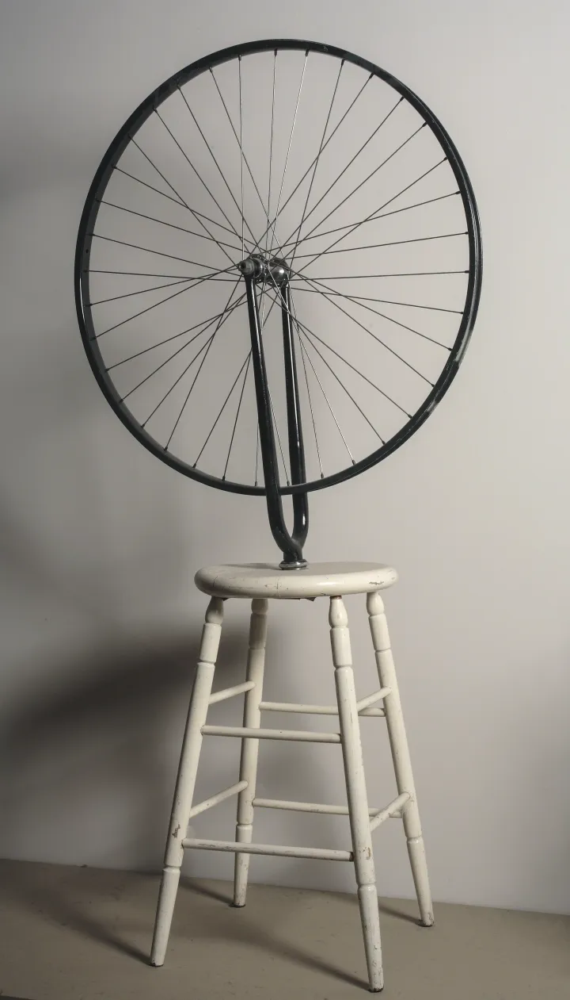
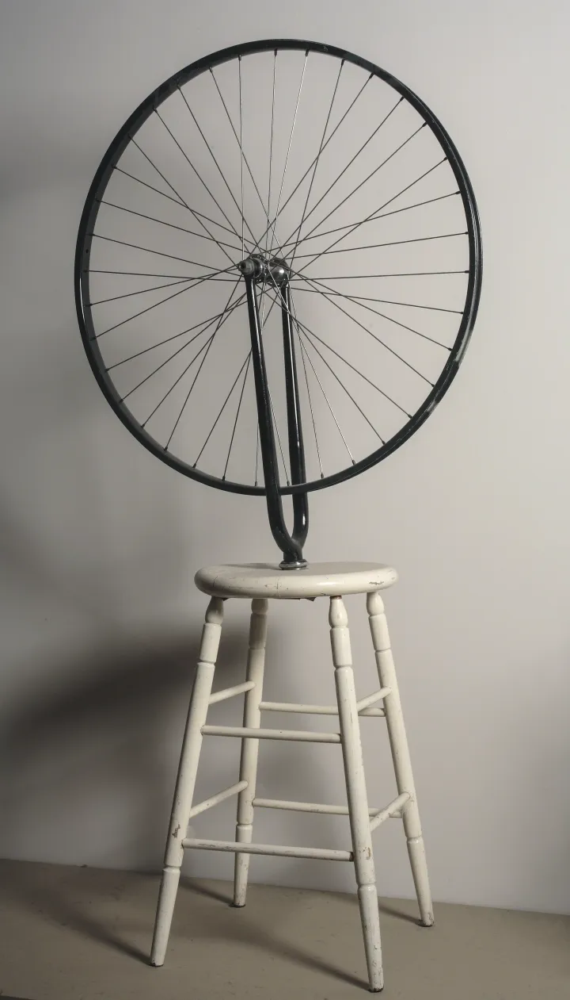

Marcel Duchamp
Marcel Duchamp Considerato fra i più importanti e influenti artisti del XX secolo, nella sua lunga attività si occupò di pittura (attraversando le correnti del fauvismo e del cubismo), fu animatore del dadaismo e del surrealismo, e diede poi inizio all'arte concettuale, ideando il ready-made e l'assemblaggio.
 
